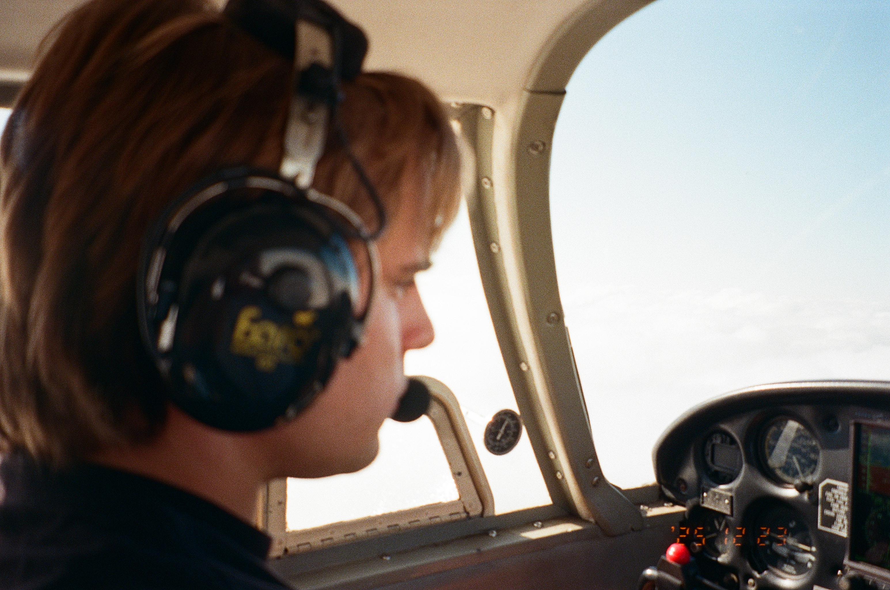
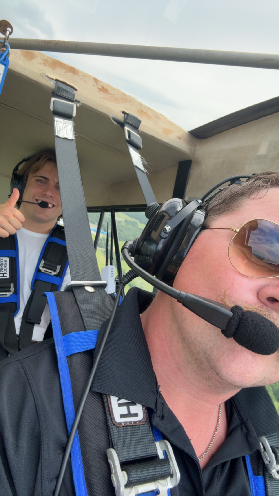

The Fleet
Train in an American Champion Citabria, the perfect platform for mastering energy management and tailwheel proficiency.


From ground school to your checkride, master the skies with expert tailwheel and primary flight instruction.
Explore the Syllabus
There is nothing quite like the feeling of leaving the ground and mastering stick-and-rudder skills. On this site, I document the training journey, share resources for upcoming lessons, and connect with other aviators around the Bryan, Madisonville, and Hooks communities.

Select a lesson below to download the associated study guides, lesson plans, and flowcharts.
Train in an American Champion Citabria, the perfect platform for mastering energy management and tailwheel proficiency.